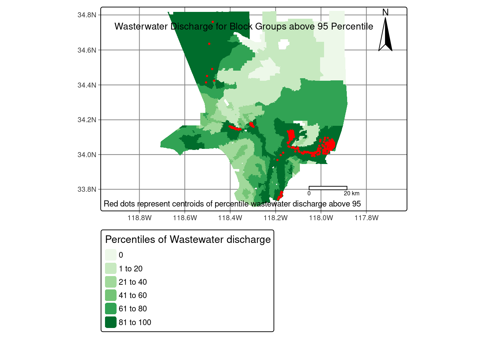
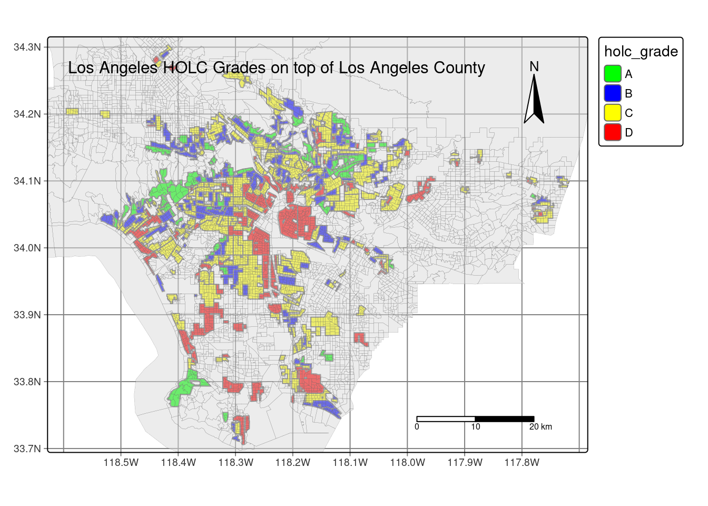

#read in libraries
library(tidyverse)
library(sf)
library(tmap)
library(spData)
library(gt)Relationship between HOLC grade and income disparity in Los Angeles County
Overview
Present-day environmental justice may reflect legacies of injustice in the past. The United States has a long history of racial segregation which is still visible. During the 1930’s the Home Owners’ Loan Corporation (HOLC), as part of the New Deal, rated neighborhoods based on their perceived safety for real estate investment. Their ranking system, (A (green), B (blue), C (yellow), D (red)) was then used to block access to loans for home ownership. Colloquially known as “redlining”, this practice has had widely-documented consequences not only for community wealth, but also health.1 Redlined neighborhoods have less greenery2 and are hotter than other neighborhoods.3
Check out coverage by the New York Times.
A recent study found that redlining has not only affected the environments communities are exposed to, it has also shaped our observations of biodiversity.4 Community or citizen science, whereby individuals share observations of species, is generating an enormous volume of data. Ellis-Soto and co-authors found that redlined neighborhoods remain the most undersampled areas across 195 US cities. This gap is highly concerning, because conservation decisions are made based on these data.
Check out coverage by EOS.
Data
EJScreen
We will be working with data from the United States Environmental Protection Agency’s EJScreen: Environmental Justice Screening and Mapping Tool.
According to the US EPA website:
This screening tool and data may be of interest to community residents or other stakeholders as they search for environmental or demographic information. It can also support a wide range of research and policy goals. The public has used EJScreen in many different locations and in many different ways.
EPA is sharing EJScreen with the public: - to be more transparent about how we consider environmental justice in our work, - to assist our stakeholders in making informed decisions about pursuing environmental justice and, - to create a common starting point between the agency and the public when looking at issues related to environmental justice.
EJScreen provides on environmental and demographic information for the US at the Census tract and block group levels. You will be working with block group data that has been downloaded from the EPA site. To understand the associated data columns, you will need to explore the Technical Documentation and column description spreadsheet available in the data folder. I also encourage you to explore the limitations and caveats of the data.
Mapping Inequality
A team of researchers, led by the Digital Scholarship Lab at the University of Richmond have digitized maps and information from the HOLC as part of the Mapping Inequality project.
We will be working with maps of HOLC grade designations for Los Angeles. Information on the data can be found here.5
Biodiversity observations
The Global Biodiversity Information Facility is the largest aggregator of biodiversity observations in the world. Observations typically include a location and date that a species was observed.
We will be working observations of birds from 2021 onward.
Investigate the legacy of redlining in current environmental (in)justice
Read in Libraries
Before starting, we need to load any necessary packages in order to do our analysis and mapping
Read in data
Here I will read in the data by using a file path that makes sense in my directory. Make sure to change your file path that makes sense for your directory. I recommend using the function getwd() to see where your current working directory is at.
#read in ejscreen data
ejscreen <- st_read("../data/EJSCREEN_2023_BG_StatePct_with_AS_CNMI_GU_VI.gdb")Reading layer `EJSCREEN_StatePctiles_with_AS_CNMI_GU_VI' from data source
`/Users/p_park/eds_223/final-project/LA-HOLC-grade-inequality/data/EJSCREEN_2023_BG_StatePct_with_AS_CNMI_GU_VI.gdb'
using driver `OpenFileGDB'
Simple feature collection with 243021 features and 223 fields
Geometry type: MULTIPOLYGON
Dimension: XY
Bounding box: xmin: -19951910 ymin: -1617130 xmax: 16259830 ymax: 11554350
Projected CRS: WGS 84 / Pseudo-MercatorData analysis
Wastewater Discharge
Once we have read in the data successfully, we’ll go ahead and create a map of the wastewater discharge by census block groups. We also want to indicate which census blocks groups are above the 95th percentile of national values for wasterwater discharge. This will be indicated by adding a centroid. In this notebook, the centroids are indicated by a red dot.
#filter in ejscreen for Los Angeles County
lac <- ejscreen %>%
filter(CNTY_NAME == "Los Angeles County")
#filter for data that does not include an NA value
lac_simple_dis <- lac %>% filter(!is.na(P_PWDIS))
# create centroids for all PWDIS above the 95th percentile
lac_centroid_dis95 <- lac %>% #pip from lac
select(P_PWDIS) %>% #select P_PWDIS
filter(P_PWDIS > 95) %>% #filter for percentiles that are above the 95 percentiles
st_centroid() #create a centroid for those filtered percentiles
lac_centroids_dis95_map <- tm_shape(lac_centroid_dis95) + #add the lac_centroid_dis95 data on top of first map
tm_dots(fill = "red") #have them as dots, with color red
lac_simple_dis_map <- tm_shape(lac_simple_dis) + #create a map using the lac_simple dataset
tm_graticules() + # add graticules on the map
tm_fill(fill = 'P_PWDIS', #have fill be for P_PWDIS column
palette = 'greens', #have the palette changed to green
title = "Percentiles of Wastewater discharge") + #put title on legend
tm_compass(type = "arrow", position = c("right", "top"), size = 3) + # add compass on map at the top right of the map
tm_scale_bar(breaks = c(0, 15, 30, 45), position = c("left", "bottom")) + # scale bar is on map at the bottom right of the map (cannot move and manipulate)
tm_layout(asp = 1.5, #change the aspect of the map
title = "Wasterwater Discharge for Block Groups above 95 Percentile", #put a title on the map
title.size = 2) +
tm_credits("Red dots represent centroids of percentile wastewater discharge above 95",
position = c("LEFT", "BOTTOM"))#change the font size of title
#combine two maps together and print combined maps
lac_simple_dis_map + lac_centroids_dis95_map
Here, we see a map of the Los Angeles County showing the percentiles of wastewater discharge, with least discharge being light green and most discharge being dark green. The figure caption states that Block groups over the 95th percentile.
Low Income Percentage
We are also interested in the relationship between census block groups and population income. One relationship we will look into is the percentage of census block group have less than 5% of that group’s population that is considered low income.
#finding low income percent that is less than 5 percent
lowincpct_5 <- lac %>% #piping from lac
select(LOWINCPCT) %>% #select LOWINCPCT
filter(LOWINCPCT < 0.05) #filter for LOWINCPCT that is less than 5 percent
#filtering for just low income percent in a new dataframe
lac_lowincpct <- lac %>% #piping from lac
select(LOWINCPCT) #select for just LOWINCPCT in a new dataframe
#divide the number of rows in lowincpct_5 by rows in lac_lowincpct and multiply by 100
low_income_final <- (nrow(lowincpct_5) / nrow(lac_lowincpct)) *100Here we get a percentage of about 6.11. One conclusion from this number is showing that there are many more census blocks that have a higher percentage of low income population. We can assume that there are a higher percentage of low income individuals that live in the Los Angeles County. Let’s go ahead and look more into the data to see if these low income population are more likely to be found in a lower HOLC rank.
Particulate Matter and Superfund proximity
We looked at low income percentage in different census block groups. Now let’s look at the relationship between census block groups and the Particulate Matter as well as the Superfund proximity. We’ll go ahead and look at which census block groups are above the 80th percentile for both of these.
#Filtering for particulate matter 2.5 and superfund proximity for above 80 percentile
lac_pm25_super_80 <- lac %>% #piping from lac
filter(P_PM25 > 80 & P_PNPL > 80) #filter from P_PM25 and P_PNPL for above the 80 percentile
#divide number of rows in lac_pm25_super_80 by number of rows in lac
pm25_super_final <- nrow(lac_pm25_super_80) / nrow(lac) * 100From this, we can conclude that about 17.36 percent of census block groups live in areas that are in the 80th percentile for high PM 2.5 levels and in superfund proximity.
Import redlining data for Los Angeles
Now we’re going to go ahead and read in the redlining data for Los Angeles county. Fortunately in this case, we can do ahead and read it in through the URL.
Creating LA county map with HOLC grade on top
Now we want to visualize the redlining boundaries. Let’s go ahead and do that by plotting a map of where these boundaries lie on Los Angeles County.
#print map that includes the historical redlining boundaries
tm_shape(LA_redlining) + #load LA_redlining data
tm_graticules() + #print on gradicules on map
tm_polygons(fill = "holc_grade", #have the fill on holc_grade column
palette = c("green", "blue", "yellow", "red"), #change the palette to fit original holc grade color scheme
breaks = c("A", "B", "C", "D")) +
tm_shape(lac) + #load lac data
tm_polygons(alpha = 0.5, #have transparancy be at 0.5
lwd = 0.1) + #have line width at 0.1
tm_compass(type = "arrow", position = c("right", "top"), size = 3) + # add compass on map at the top right of the map
tm_scale_bar(position = c("left", "bottom")) + # scale bar is on map at the bottom right of the map (cannot move and manipulate)
tm_layout(asp = 1.3, #change the aspect of the map
title = "Los Angeles HOLC Grades on top of Los Angeles County", #put a title on the map
title.size = 1) #change the font size of title
This map shows us the locations of where each HOLC grade lies in relation to Los Angeles county.
Census block groups in HOLC grade
In order to get a concrete detail about this, we’re going to ahead and find how many census block groups that fall within areas with HOLC grades.
This tells us that 3951 of census block groups lie within HOLC grade areas
Summarizing Redlining data
Let’s go ahead and take a deeper dive into our HOLC dataset and look for the mean of the following variables:
- % low income.
- percentile for particulate Matter 2.5.
- percentile for low life expectancy.
- percentile for air toxics cancer risk
#join the two datasets by only filtering for the census block group that are completely within the HOLC grades
redlining_lac_join <- st_intersection(lac, LA_redlining_crs_t)
#find the means of the four variables we are looking for
redlining_mean_summary <- redlining_lac_join %>% #piping from redlining_lac_join
group_by(holc_grade) %>% # grouping by holc_grade
summarise(low_income_mean = mean(LOWINCPCT, na.rm = TRUE) * 100, #find the mean of LOWINCPCT
pm25_mean = mean(P_PM25, na.rm = TRUE), #find the mean of P_PM25
low_lifeexp_mean = mean(P_LIFEEXPPCT, na.rm = TRUE), #find the mean of P_LIFEEXPPCT
cancer_mean = mean(P_CANCER, na.rm = TRUE)) %>% #find the mean of P_CANCER
st_drop_geometry() %>% #get rid of geometry column
gt() #use gt function to get nicer table
#print summary with means of variables we are interested in
redlining_mean_summary| holc_grade | low_income_mean | pm25_mean | low_lifeexp_mean | cancer_mean |
|---|---|---|---|---|
| A | 14.94183 | 72.14222 | 23.73502 | 44.00223 |
| B | 24.19799 | 76.33145 | 37.37701 | 47.69579 |
| C | 34.09575 | 78.81780 | 47.88598 | 54.55879 |
| D | 39.15954 | 80.23254 | 53.05932 | 56.53943 |
From our analysis, those in the A HOLC grade have a better standard of living than those in the D HOLC grade. Those that are in the A HOLC grade have a larger income pool, meaning they have access to better health care and live in a cleaner area verses those that have lower income.
Investigate the legacy of redlining in biodiversity observations
Now, let’s look at the data from a bit of a different lens. One factor that income plays in one’s life is what recreations they can do. Let’s go ahead and look at bird observations in each HOLC grade. Let’s go ahead and look at bird observations from 2022. We’re also going to find the percentage of observations within each redlining category and plot them in a bar graph.
#read in bird data
birds <- st_read("../data/gbif-birds-LA") %>% filter(year == 2022)Reading layer `gbif-birds-LA' from data source
`/Users/p_park/eds_223/final-project/LA-HOLC-grade-inequality/data/gbif-birds-LA'
using driver `ESRI Shapefile'
Simple feature collection with 1288865 features and 1 field
Geometry type: POINT
Dimension: XY
Bounding box: xmin: -118.6099 ymin: 33.70563 xmax: -117.7028 ymax: 34.30385
Geodetic CRS: WGS 84#check the crs for LA_redlining
st_crs(LA_redlining) Coordinate Reference System:
User input: WGS 84
wkt:
GEOGCRS["WGS 84",
DATUM["World Geodetic System 1984",
ELLIPSOID["WGS 84",6378137,298.257223563,
LENGTHUNIT["metre",1]]],
PRIMEM["Greenwich",0,
ANGLEUNIT["degree",0.0174532925199433]],
CS[ellipsoidal,2],
AXIS["geodetic latitude (Lat)",north,
ORDER[1],
ANGLEUNIT["degree",0.0174532925199433]],
AXIS["geodetic longitude (Lon)",east,
ORDER[2],
ANGLEUNIT["degree",0.0174532925199433]],
ID["EPSG",4326]]#transform crs and join dataframes
birds_crs_t <- st_transform(birds, crs = st_crs(4326)) #transform birds dataframe crs to LA_redlining crs
redlining_birds_join <- st_join(LA_redlining, birds_crs_t) #join both LA_redlining and new bird dataframe to get joined dataframe
redlining_bird_summary <- redlining_birds_join %>% #piping from redlining_birds_join
group_by(holc_grade) %>% #group by holc grade
summarise(percentage = n()/nrow(redlining_birds_join)) #create a summary table by dividing each holc grade by the total rows in redlining_birds_join
#plot as bargraph
ggplot(data = redlining_bird_summary, #use redlining_bird_summary data
aes(x = holc_grade, #have holc_grade be on x axis
y = percentage)) + #have percentage be on y axis
geom_bar(stat = "identity", #telling ggplot I want to aggregate manually
aes(fill = holc_grade)) + #have fill be holc_grade
scale_fill_manual(values=c("lightgreen", "lightskyblue", "yellow", "red"))+ #change color manually
labs(x = "HOLC Grade", #change x label
y = "Percentage (in decimal form)", #change y label
title = "Percentage of bird sighting by HOLC Grade") #change title
Final Analysis I am surprised with the results I plotted, as HOLC Grade C and D have a higher percentage of bird sighting verses those in HOLC Grade A and B. I would have assumed the graph to have more bird sightings in HOLC Grade A and B rather than C and D. This could be that there are more resources found in C and D, such as humans throwing their trash away at the side of the street verses in a trash can. These birds would rather be around an area with constant food resources, which could be found in the C and D communities.
Footnotes
Gee, G. C. (2008). A multilevel analysis of the relationship between institutional and individual racial discrimination and health status. American journal of public health, 98(Supplement_1), S48-S56.↩︎
Nardone, A., Rudolph, K. E., Morello-Frosch, R., & Casey, J. A. (2021). Redlines and greenspace: the relationship between historical redlining and 2010 greenspace across the United States. Environmental health perspectives, 129(1), 017006.↩︎
Hoffman, J. S., Shandas, V., & Pendleton, N. (2020). The effects of historical housing policies on resident exposure to intra-urban heat: a study of 108 US urban areas. Climate, 8(1), 12.↩︎
Ellis-Soto, D., Chapman, M., & Locke, D. H. (2023). Historical redlining is associated with increasing geographical disparities in bird biodiversity sampling in the United States. Nature Human Behaviour, 1-9.↩︎
Robert K. Nelson, LaDale Winling, Richard Marciano, Nathan Connolly, et al., “Mapping Inequality,” American Panorama, ed. Robert K. Nelson and Edward L. Ayers, accessed October 17, 2023, https://dsl.richmond.edu/panorama/redlining/↩︎